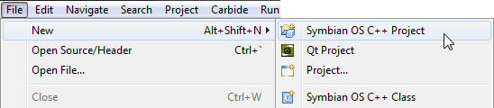
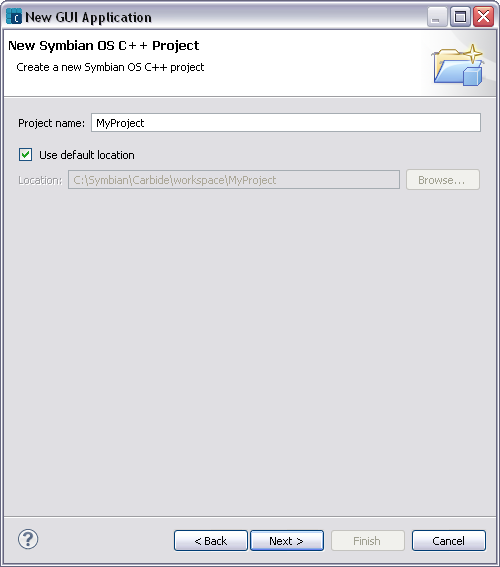
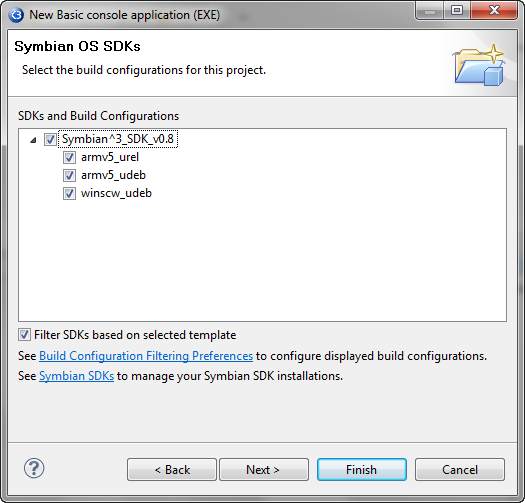
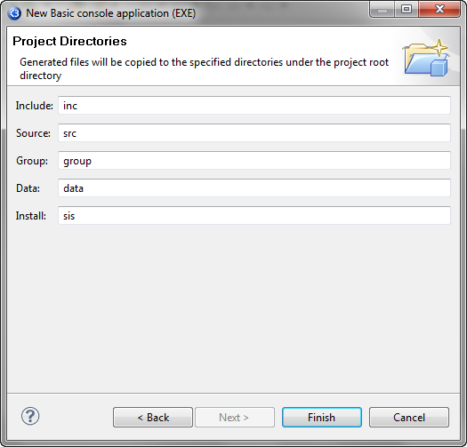
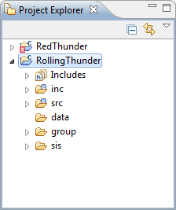

New projects are created using the New Project Wizard. Carbide includes a number of templates that make creating projects for different SDKs and executables quick and easy.
NOTE You must have at least one recognized SDK installed before you can create a project. See the Symbian SDKs panel to determine if the installed SDKs are recognized by Carbide.c++ IDE. If the SDK you have is not recognized, you may still be able to add it to the Discovered Symbian OS SDK list.
NOTE When creating or importing projects the sources and SDK must be on the same drive. This is due to many of the internal SDK tools using an implicit working drive to calculate paths (e.g. \epoc32\tools). Avoid spaces in SDK paths since this will also cause problems.
Creating New Symbian OS C++ Projects
- Select File > New > Symbian OS C++ Project to invoke the New Project wizard.
- The New Symbian OS C++ Project wizard appears. Select a template related to an installed SDK.
- Enter a name for your project.
- Select the SDKs and Build Configurations.
- Set the project properties in the Basic Settings page.
- For GUI applications, it is always 0x100039CE
- For static interface DLLs, the UID 2 is always 0x1000008d
- For polymorphic DLLs, the UID2 is defined by the framework which is being implemented
- Click Next to move to the Project Directories page.
- Click Finish to create the project.

A project template provides the initial source files and project settings appropriate for the chosen project type. A brief description of each template appears below the list. The project type determines the type of program that you are writing.
NOTE If the selected template requires user input, additional wizard pages will collect data from the user before creating the project.
Checkmark the Filter templates based on enabled SDKs option to only list SDKs enabled in the Symbian SDKs panel. Uncheck this option to list SDKs that can be used with Carbide. Click Next.

Checkmark the Use default location option to save the project in the current workspace by default or uncheck it to save to another location. Enter the path in the Location field or click Browse button to locate the directory. Click Next.

Checkmark the Filter SDKs based on selected template option to only show build configurations based on the selected SDK template, or uncheck to show all enabled SDKs and their related build configurations.

The Symbian OS SDKs wizard page shows a tree of the SDKs and the type of builds available within that SDK. Select a single SDK if the program you are developing is for just one version of a platform, or select multiple SDKs to build the program for multiple build platforms or SDK versions.
The build configuration allows you to specify the compiler(s) to do the build, and whether debug and/or release builds are required. For this example we recommend using the Emulator Debug version as the build configuration. Later, you can switch to another build configuration to create the project for a specific device.
Click Next.
NOTE The basic properties for a project may change based on the template selected for a particular project type.
Fill in the applicable fields, which may include UID2, UID3, Vendor ID, Author, Support Email, Copyright notice and Target Type for console EXEs.
Application UID (or UID3) is used to uniquely identify the binary (EXE or DLL) within the system. The purpose of UID 3 is to prevent one executable from interfering the operation of another executable.
A Vendor ID (VID) is a unique identifier for the organization that is supplying the program. In versions of Symbian OS with platform security, a program can read a VID at runtime to check that a binary comes from a particular source. In most cases, the VID should be zero, meaning that source of the executable is not required for any security checks.
UID 2 is a unique identifier number that identifies the type of interface that the project implements. The values are defined by Symbian
Author, Copyright notice, and Text to be shown are used in comments created by the wizard in the source code.
For more information on UIDs and Vendor IDs, see Symbian Signed, which allocates these values.

NOTE The project directories depends on the selected template. That is, the directories required to store project data may change based on the template used.
Accept the defaults or enter the names for Include and Source folders to be created under the project root directory. Generated files will be copied to these directories.
This generates the necessary files for the project based on the template selected and show them in the Project Explorer view.

NOTE If the Carbide.c++ perspective is not visible, select the Window > Open Perspective > Other... command to list all available perspectives, then select the Carbide.c++ perspective and click OK.